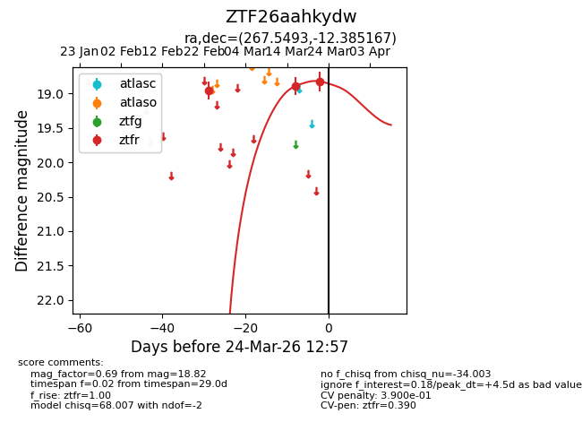
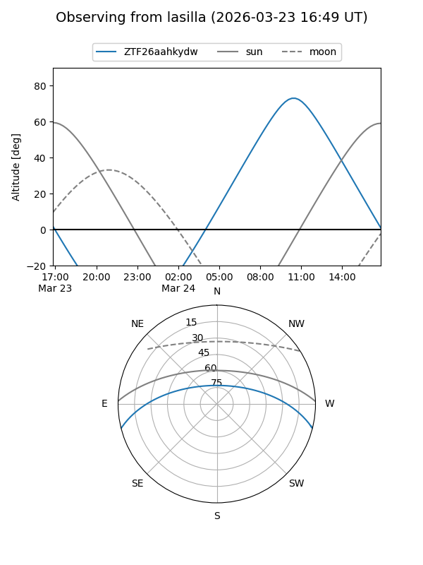
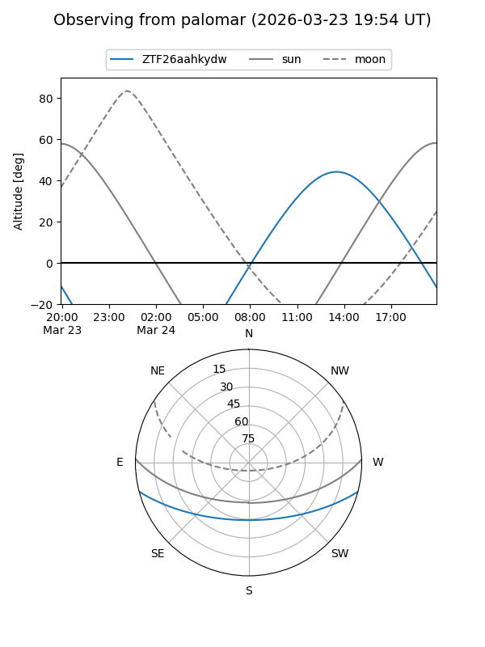
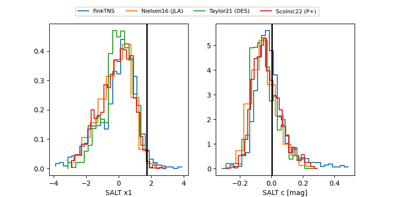

ZTF26aahkydw
Target ZTF26aahkydw at 2026-03-24 13:00
Aliases and brokers:
FINK: link
Lasair: link
ALeRCE: link
alt names
ZTF26aahkydw (ztf,fink_ztf)
Coordinates:
equatorial (ra, dec) = 267.5493,-12.38517
equatorial (HMS+DMS) = 17:50:11.84,-12:23:06.60
galactic (l, b) = (14.8006,+7.56937)
Flags:
likely cv
Photometry:
last ztfr=18.82
3 ztfr detections
Lightcurve

Visibility


Additional plots
